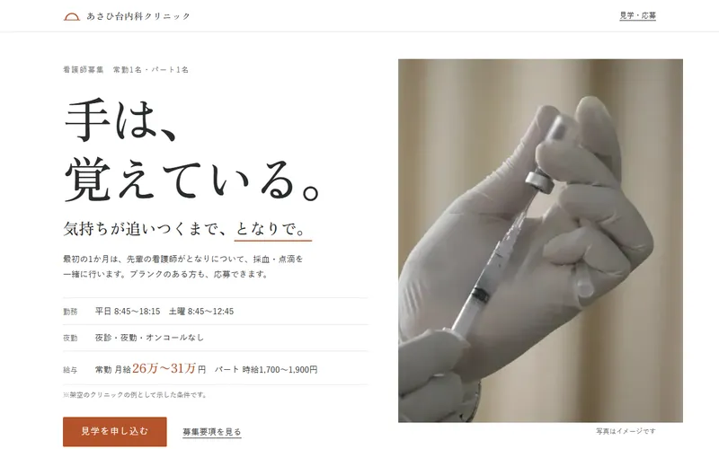
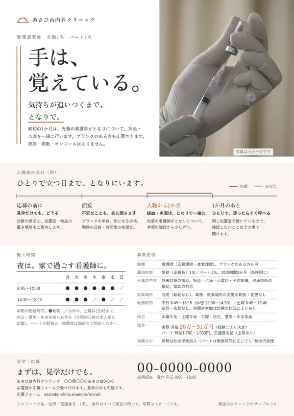

クリニックの
看護師採用LP・求人バナー・チラシ
あさひ台内科クリニック（架空のクリニック・架空の依頼）
- 担当
- キャッチコピー・構成・文章・デザイン・コーディング・写真選び、求人バナー3案（2サイズずつ）、院内掲示用の募集チラシ（A4・印刷用PDF）
- 使ったもの
- HTML / CSS / JavaScript（バナーとチラシもHTML/CSSで組んで書き出し）
実際の募集の形をまねた想定の依頼「求人サイトに出しても、ブランクが不安で面接の前に辞退されてしまう」に答えた作例です。伝えたいことを「ブランクがあっても、日勤だけで戻れる」のひとつにしぼり、「手は、覚えている。気持ちが追いつくまで、となりで。」と、最初の1か月は先輩がとなりで採血・点滴を一緒に行うことを具体的に見せました。
雇用形態・勤務時間・休日・給与などの条件は省かずにすべて載せ、性別や年齢を限る言葉、根拠のない言い切りは使っていません。色は白と墨に「朝日の朱」を少しだけ。淡い朱の地を使う所や線の扱いをひとつのルールにして、LP・バナー・チラシをそろえています。
写真は素材サイト（Unsplash）のイメージです。給与などの条件はすべて架空の例です。




